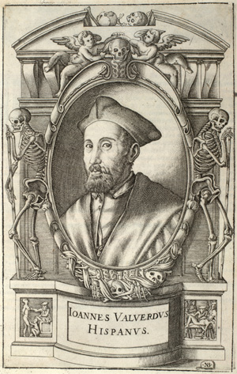

Juan de
Valverde de Amusco's Anatomia del corpo humano , Rome, 1559
Valverde (c.1525-c.1587) was a Spanish doctor. His compendium of anatomy,
which was published first in Spanish in 1556, subsequently appeared in 1559 in an
Italian translation, the plates from which have been imaged for this project.

Valverde admitted to having made use of Vesalius's illustrations, and was explicit in his expressions of
admiration for Vesalius's achievement, while daring to put forward certain corrections.
However, Vesalius attacked him in 1564: "Valverde who never put his hand to a dissection
and is ignorant of medicine as well as of the primary disciplines, undertook to expound
our art in the Spanish language only for the sake of shameful profit" (quoted O'Malley, 1964, p.294).
The text, although following the lines of Vesalius, was entirely written by Valverde, and
was shorter and simpler. As for the plates, he wrote: "Although it seemed to some of my
friends that I should make new illustrations without using those of Vesalius, I did not do
so in order to avoid confusion ... and because his illustrations are so well done it would
look like envy or malignity not to take advantage of them."(1)
For his illustrations he used copperplate engravings, and what is interesting is
that very extensive use was made of Geminus's plates as models. The choice and
arrangement of the groupings for the composite plates are for the most part
very close to Geminus's; too close for the similarities to be coincidental.(2)
The elimination of the landscapes in many of the large plates, leaving only the most
residual ground line with a few tufts of grass, is handled exactly as the plates in
Geminus. Valverde, or his draftsmen, must have got hold of an example of
Geminus's book and copied it. This is rather extraordinary: that a book produced in
so provincial a backwater as London should have been used in Rome,
one of the two or three most sophisticated centres of printmaking in the world, is
remarkable.
The quality of the engravings illustrating Valverde's book is much higher than those of Geminus.
At least some of them are the work of Nicolas Beatrizet (active 1540-1573), a much admired engraver
from Lorraine who spent most of his working life in Rome.(3) Although the
majority of the plates are taken over from Geminus, with little change, a certain number
of them are significantly reconsidered. Early sources attribute to Caspar Becerra (1520-1570),
a Spanish artist, a role in the design process, and it may be that he was responsible
for those of the illustrations that were new.(4) The book was published by Antonio Salamanca
and Antonio Lafreri who were establishing, in Rome, one of the most innovative and
important print publishing businesses in Europe.
(1) K.B. Roberts and J.D.W. Tomlinson, The Fabric of the Body (Oxford: 1992) p.211. [Back]
(2) Hind, 1952, pp.42-43 had already noted this. [Back]
(3) A. von Bartsch attributed all the engravings to Beatrizet, Le peintre-graveur , XVI. [Back]
(4) Roberts and Tomlinson, p.214; V. Carducho, Dialogos
de la Pintura , ed. F. Calvo Serraller (Madrid: 1979) pp.25-6. [Back]
© 2004 Edinburgh University Library / Royal College of Physicians of Edinburgh
www.lib.ed.ac.uk
1 September 2004
|